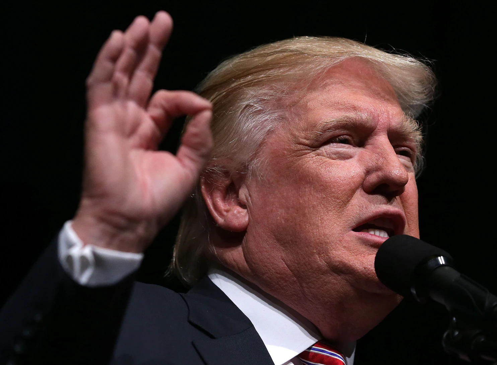

/*
*/
Donald Trump Regains Power in Historic U.S. Election Comeback

In an unprecedented turn of events, Donald Trump has made a historic comeback, regaining the presidency of the
United States. The former president, who served from 2017 to 2021, secured a decisive victory in the latest
election, marking a significant shift in the political landscape.
Trump's campaign focused on promises to revitalize the economy, strengthen national security, and address key
issues such as immigration and healthcare. His message resonated with a broad base of voters, leading to a
sweeping win across several key battleground states.
In his victory speech, Trump expressed gratitude to his supporters and outlined his vision for the future. "This
is not just a victory for me, but for every American who believes in the promise of our great nation," he said.
"Together, we will make America stronger, safer, and more prosperous than ever before."
Political analysts are already speculating on the potential impact of Trump's return to the White House. Many
expect significant policy changes and a renewed focus on the issues that defined his first term. As the nation
prepares for the transition of power, the world watches closely to see how Trump's leadership will shape the
future of the United States.